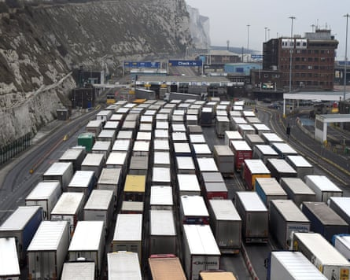
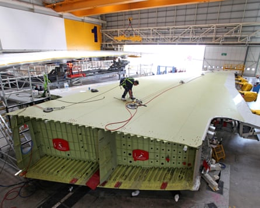
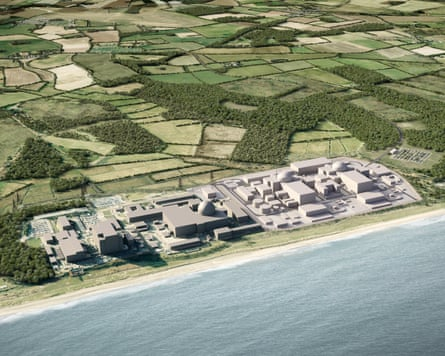

A s Keir Starmer welcomes Emmanuel Macron to Britain for a landmark state visit aimed at building closer ties between London and Paris, the future of the nations’ £100bn trading relationship will be drawn sharply into focus.
In the three days of talks, concluding with the 37th Franco-British summit on Thursday, much of the attention will be on cross-Channel issues, including migration, amid expectations for a new deal on tackling small boat crossings . However, cooperation on business, trade, defence and security in the shifting global landscape will also feature prominently.
After the damage of Brexit, Starmer and Macron are hoping to use the visit to turn the page on years of simmering tension and attempt a show of unity in the face of Donald Trump’s erratic trade war. Macron will be hosted by King Charles at Windsor Castle (while Buckingham Palace is refurbished) with an address to parliament on Tuesday and lavish meal at Guildhall in the City of London on Wednesday.
The last time a French head of state came to Britain on an official visit, 17 years ago, Gordon Brown and Nicolas Sarkozy had a similar message; using a joint press conference at Arsenal’s Emirates stadium to warn that cooperation between nations would prove the only way out of the 2008 global financial crisis.
This time around, international relations are in a far worse position as Donald Trump upends the postwar western economic and security consensus, threatening sweeping border taxes on the US’s allies and enemies alike, and demanding European countries play a bigger role in the Nato military alliance.
Much is at stake. France is the UK’s fifth largest trading partner, with annual volumes of goods and services crossing the Channel worth about 6% of Britain’s global total.
After Starmer’s “EU reset” deal with Brussels in May, business leaders in both countries are hoping Macron’s state visit will smooth the way for progress in repairing the damage of Brexit. The EU summit agreed several areas in principle, but government sources say the focus with Macron will be about pinning down the details of how things will work in practice.
Brexit paperwork inflicted pain for vital cross-Channel trade in 2022.Photograph: Martin Dalton/Rex/Shutterstock
“It has been quite tough after Brexit on both sides. But now Brexit is behind us,” said Françoise Rausch, the president of the Franco-British Chamber of Commerce, which has represented chief executives on both sides of the Channel for more than 150 years.
“Things have definitely improved. We are two big countries, leaders in Europe, and we need each other. We are strong if we are collaborating and strengthening our partnership,” she said.
Brexit triggered a collapse in UK exports to the EU worth £27bn in the first two years, inflicting pain for cross-Channel trade amid long delays for truck drivers at Dover and Calais , mountains of paperwork and reams of red tape.
Trade volumes have recovered, yet UK goods exports to the EU remain below pre-Brexit levels . Services exports have fared better.
Rausch credited Rishi Sunak’s visit to Paris in 2023 for beginning the repair job, after years of antagonism, as well as the king’s state visit, his first as monarch, in the same year. “Since then we have been moving forward very positively.”
Closer relations with France could help Starmer to unlock further progress with Brussels. Yael Selfin, the chief economist at KPMG, said: “It is a very important visit. France is very influential in the EU bloc, so Paris being more receptive could ease the trading relationship.”
Britain imports more from France than is sold in exchange, led by beverages and aircraft, resulting in a trade deficit worth almost £12bn last year. The UK is one of the top overseas markets for French wines – including almost 30m bottles of champagne bought by British drinkers each year – as well as perfume, luxury goods and cheeses.
Airbus manufactures aircraft wings at its Broughton plant in north Wales before flying them to Toulouse in France.Photograph: Bloomberg/Getty Images
Services account for about half of UK exports, led by professional and management consulting, finance and IT. Mechanical power generators, cars and aircraft – including wings manufactured by Airbus at its Broughton plant in north Wales, before being flown to its headquarters in Toulouse for final assembly – are among the largest exports.
Fish and shellfish – with more than half of all Scottish exports to the EU going to France – are also a significant export, including salmon and langoustines, in trade worth £1bn a year to fishing communities.
As with the last French state visit to the UK, closer cooperation on civil nuclear projects will be high on the agenda. Brown and Sarkozy agreed to stronger ties at their Arsenal summit , months before the British prime minister gave the green light to expansion of the Hinkley and Sizewell power stations.
After 17 years without a single extra watt from a new nuclear plant, and with a dramatically rising price tag, UK ministers last month committed £14.2bn of investment to build Sizewell C alongside the French state-owned energy company EDF. Further funding from the private sector is expected.
Defence will also feature prominently, given the tense geopolitical backdrop and as European leaders respond to Trump’s strong arming of Nato member states to raise their spending on defence.
Ministers have pledged £14.2bn of investment to build Sizewell C alongside the French state-owned energy company EDF.Photograph: EDF
Starmer and Macron will focus on the cross-Channel defence industry after the agreement with Brussels in the UK-EU reset, allowing British companies to participate in the EU’s planned £150bn security action for Europe (Safe) defence fund.
Already, there are strong connections, including the French defence firm Thales employing more than 7,000 workers at 16 sites across the UK. However, there are also tensions, amid reports that French diplomats had initially sought to block UK involvement in Safe.
Behind the pomp and ceremony of a state visit, it will also not have gone unnoticed in the Élysée Palace that Starmer has attempted to keep the UK as close as possible to Trump’s White House, while also pushing to strike closer ties with Brussels.
Macron has taken a more robust line with Trump than Starmer’s softly, softly approach. London’s deal to soften the most extreme US tariff rates could rankle Paris at a time when EU officials remain locked in talks with Washington before the possible escalation of border tax rates on 1 August.
The French president will, however, beat his US counterpart to a state visit, as Trump is expected to fly over in the autumn. Although the US is the UK’s single largest trading partner, in a relationship worth more than £300bn, Britain has tightly interwoven links with France and the wider EU, due to closer geographic proximity. Business leaders say this makes cooperation on the European continent more important.
“The US and President Trump are creating a lot of uncertainties which are bad for business. What is concerning is what’s happening in the Middle East, in eastern Europe, and the fact that Trump wants Europe really to take the lead on defending its sovereignty,” Rausch said.
“For me these are the most important reasons why France and the UK are even bigger allies than before.”